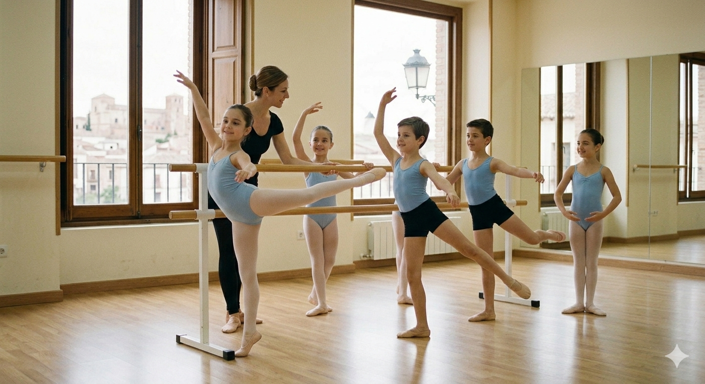
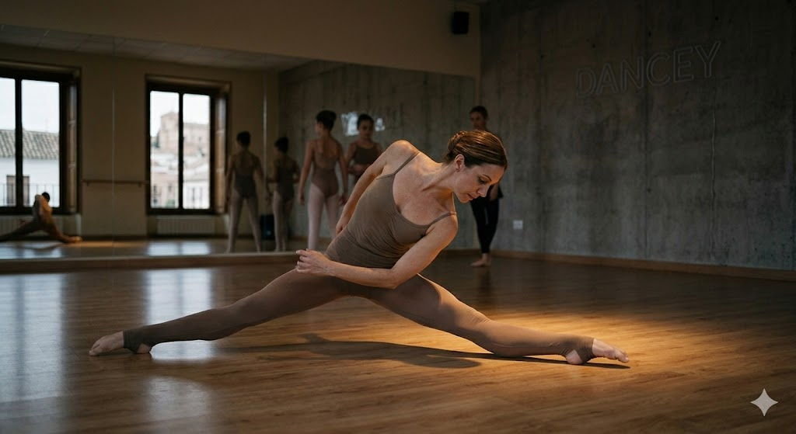

Nuestra Formación
Un programa académico diseñado para transformar la pasión en una carrera profesional.
En DANCEY, ofrecemos una formación integral que abarca desde las enseñanzas elementales para los más jóvenes, hasta un riguroso programa profesional que prepara a nuestros estudiantes para el mundo de la danza a nivel nacional e internacional.

Enseñanzas Elementales de Danza
Enfocado a niños de 8 a 12 años. Es la base técnica donde se trabajan la elasticidad, el ritmo y la disciplina artística.
(Todos ellos cuentan con la posibilidad de acceder a las enseñanzas profesionales al finalizar el ciclo elemental).
Las asignaturas comunes y específicas son las siguientes:
Aquí encontrará información detallada sobre las enseñanzas elementales oficiales.

Enseñanzas Profesionales
6 cursos académicos que habilitan para el Título Profesional de Danza con cerificado oficial. Tres especialidades únicas en la región.
Aquí encontrará información detallada sobre las enseñanzas profesionales oficiales.